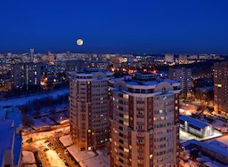

Город Королёв - город в Московской области России, наукоград. Основан 26 декабря 1938 года, но до 8 июля 1996 года назывался город Калининград. На момент 2021 года население города составляло 224 348 человек. Самый большой по населению наукоград. Королёв часто неофициально называют космической столицей России. В мае 2014 года в состав города был включён упразднённый город Юбилейный.
Город расположен к северо-востоку от Москвы, в 23 км от центра и в 6—7 км от МКАД по Ярославскому шоссе. Ярославское шоссе является западной границей Королёва. С юга к городу примыкает Национальный парк «Лосиный Остров». А с севера и востока — дачные посёлки. Площадь, занимаемая городом, равна 55,44 км. Городской округ Королёва граничит с городскими округами Ивантеевка (на северо-востоке), Щёлково (на востоке), Балашиха (на юге), Мытищи (на западе) и Пушкинским городским округом.
Климат города Королёв, как и всей Московской области — умеренно континентальный, немного отличается от климата Москвы. Зимой здесь несколько холоднее, а летом (июнь здесь теплее, чем август) не так жарко и душно, как в российской столице, осадков выпадает несколько меньше. Самый холодный месяц, в отличие от областного центра, январь, а март здесь холоднее, чем ноябрь. В декабре также часты оттепели.
Таблица климата города:
Королёв делится на несколько исторических районов и частей, зачастую названных по бывшим населённым пунктам, поглощённым городом при его развитии:
Органами местного самоуправления городского округа Королёв являются:
В городе работает 45 муниципальных детских садов и 29 школ. Дополнительное образование представлено языковыми центрами, спортивными школами, школами искусств. На предприятиях города трудится большое число известных учёных и изобретателей, в том числе академики, около сотни докторов и более тысячи кандидатов наук. Примерно 67 % жителей имеют высшее или среднетехническое образование, по этому показателю город занимает одно из первых мест в России.
На базе Технологического университета им. А.А. Леонова открылся первый в России региональный
технологический Центр аддитивного производства и лазерных технологий, а также состоялось расширенное заседание
Наблюдательного совета Регионального научно-образовательного кластера «Северо-Восток». Глава Королёва Игорь
Трифонов сказал: я рад, что Центр аддитивного производства открывается именно в нашем высокотехнологичном
наукограде Королёве – столице отечественной космонавтики
.
"Для нашего города крайне важно технологическое лидерство. Сегодня мы увидим в новом Центре аддитивного производства продолжение лучших инженерных мыслей мира и, главное, наших инженеров, которые сейчас в России создают уникальный продукт. Открывающийся технологический центр – это соединение всех федеральных программ. Это, в том числе, и программа развития наукоградов Российской Федерации".